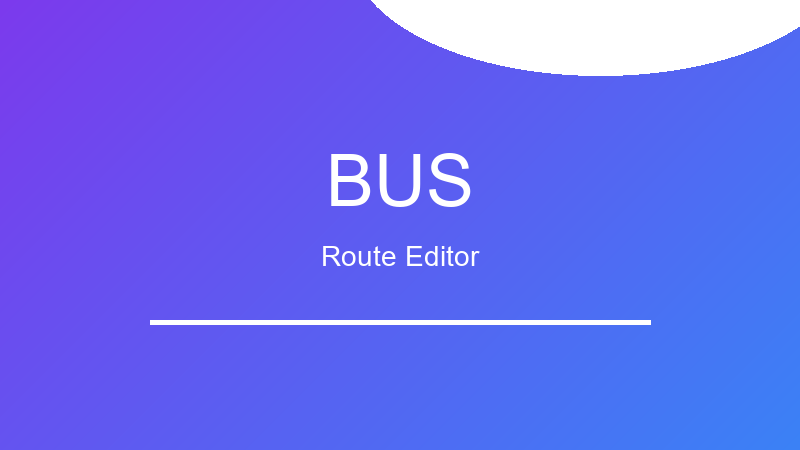
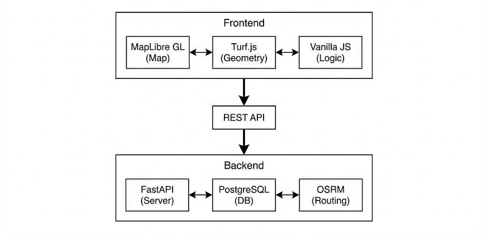

Back to Projects

Web App
Phase 4.5 Complete
Featured Project
내편 중구버스 노선 편집기
서울시 중구 셔틀버스 노선 설계를 위한 인터랙티브 웹 에디터. 정부 기관과 협업하여 개발한 실제 운영 중인 시스템입니다.
Overview
서울시 중구청과 협업하여 개발한 버스 노선 설계 도구입니다. 기존에 수작업으로 진행하던 노선 계획 업무를 디지털화하여 효율성을 크게 향상시켰습니다.
드래그앤드롭으로 정류장을 추가/삭제하고, OSRM 라우팅 엔진을 통해 실시간으로 최적 경로를 계산합니다. 75분 운행시간, 44인승 제약 등 실제 운영 조건을 반영한 검증 기능을 제공합니다.
Key Features
인터랙티브 지도 편집
MapLibre GL JS 기반 드래그앤드롭 인터페이스
실시간 경로 최적화
OSRM 엔진으로 최단 경로 자동 계산
운행 조건 검증
75분 시간 제약, 44인승 정원 자동 검증
Undo/Redo 지원
모든 편집 작업 취소/복원 가능
Architecture

Project Info
- Status
- Production
- Version
- Phase 4.5
- Client
- 서울시 중구청
- Duration
- 2024.09 - 2025.01
Tech Stack
Frontend
MapLibre GL JS
Turf.js
JavaScript
Backend
Python
FastAPI
PostgreSQL
Services
OSRM
Kakao API